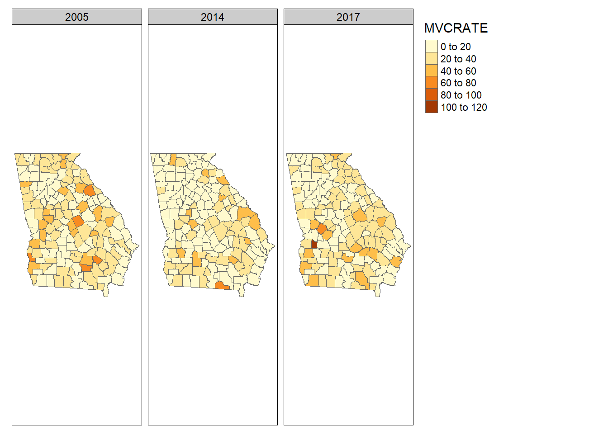
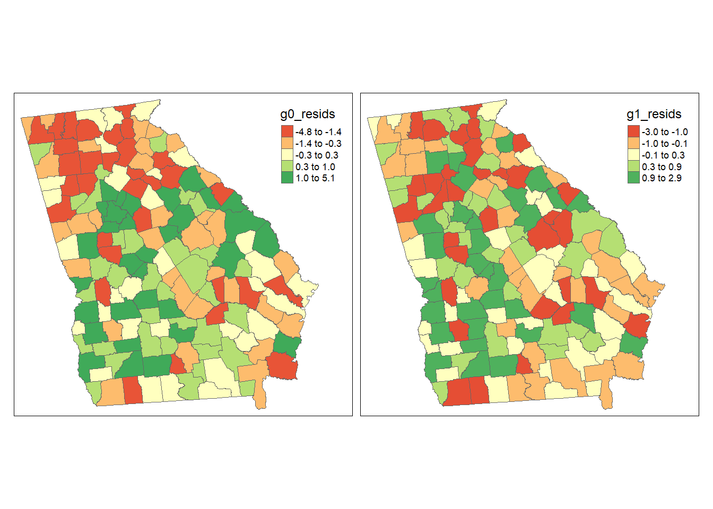

Week 10 Spatial Regression I
10.1 Getting Ready, w10
10.1.1 Learning objectives, w10
| After this module you should be able to… |
|---|
| Choose and justify spatial analytic methods that aligns with the epidemiologic research question or objective |
| Calculate and interpret spatial patterns of residuals from an aspatial multivariable regression model |
10.1.2 Additional Resources, w10
10.1.3 Important Vocabulary, w10
| Term | Definition |
|---|---|
| Data generating process | The true underlying causal structure that gives rise to (generates) the data from which you sampled. The data generating process is not known. We use models to try to emulate or approximate the data generating process. |
| Model residual | The difference between the model predicted value of the outcomee and the observed value. In spatial epidemiology, model residuals can provide clues as to the presence of missing variables that produce spatial patterns |
10.2 Multivariable regression for exploring spatial data
Multivariable regression is not magic. It is just fancy correlations and estimation of sample means. It is a statistical tool that takes noisy or variable data, and smooths or reduces it to summary statistics which we hope are more interpretable than trying to make meaning from the raw data alone. Multivariable regression methods are useful to epidemiologists because this is often what we want: smoothed summaries that distill some trends or features that (hopefully) give us clues about the true process.
There are several motivations for using multivariable regression with spatial data:
- For descriptive spatial analysis, we may be interested in producing adjusted estimates conditioned on multiple covariates (e.g. age strata, socioeconomic status, or background/nuisance environmental features). While it is possible to produce indirectly adjusted estimates as discussed in Disease Mapping, this becomes more challenging with higher data-dimensionality (more variables). For example we could use multiple variables to predict the disease count (or rate) in each region as a function of those covariates.
- For exploration and diagnosis of aspatial model performance, we may want to evaluate whether regression models explain spatial auto correlation, or whether there is undiagnosed dependency in residuals that is not apparent from conventional aspatial residual diagnostic plots.
- For etiologic spatial analysis, we may be interested in estimating conditional associations which could be interpreted as causal effect estimates under certain circumstances including adjustment for causally confounded pathways. This motivation for aspatial modeling extends to spatial in at least two scenarios:
- Interest is in association between a predictor and an outcome, conditional on covariates, but there is concern for residual nuisance spatial auto correlation which if unaddressed could bias estimates
- Interest is in association between a predictor and an outcome, conditional on covariates, and there is spatial interaction or spillover in the causal process.
10.2.1 Data Generating Process
Of critical importance for effective use of regression in any aspect of epidemiology, including spatial, is theorizing or hypothesizing about the data generating process. This is simply a phrase for describing the (possibly unknown) mechanisms in the world that collectively generated the events that gave rise to the data we sampled and observed. In causal epidemiology, we often use directed acyclic graphs (DAGs) as illustrations or models of possible data generating processes.
The reason to bring this concept up at this point, is because the process by which spatial patterns are generated is of central interest in spatial epidemiology. If health events (e.g. incident cancer, influenza, or diabetes) were homogenous and constant over space – or if they were heterogeneous but purely random and independent of one another – we might see less value in the tools of spatial epidemiology to gain insight. However, when we observe spatial structure or patterns (including extremes of heterogeneity or dependence) in disease or health status, it is unlikely that these patterns just sprung up for no reason. In other words, rarely is your physical location at a specific latitude and longitude the sole explanation for having higher or lower risk of disease. Instead spatial patterns in health are due to spatial patterns in the causes of health, or the data generating process. Therefore we often wish to dig deeper to understand these causes, and to describe as accurately as possible the data generating process.
10.2.2 Model residuals are not just mistakes
You will likely recall from biostatistics that for a given random variable we can define statistical error as the deviation of a specific observations measured value from its expected value, which is the true mean in the underlying population. Because we rarely know the true mean for the entire population, we use the mean from our specific sample as an approximation. Therefore a model residual is the difference of an observation from the sample mean.
The use of the word ‘error’ is used because in some contexts because these deviations are presumed to represent some unknown, random, mistakes in the estimation perhaps because of sampling error (e.g. we only took a sub-sample from the full population) or because of simple random chance (e.g. ‘measurement’ error). Because we sometimes treat the errors as random mistakes, we often assume the errors follow certain random distributions. For example in linear regression we assume that the model residuals are normally distributed, and that – on average – their value is zero. In other words, we assume that the average observation is in fact equal to the sample mean, and therefore there is zero difference between them. In addition, for the residuals that are not exactly equal to the expected value, they could be positive (e.g. the observed value is larger than expected), or negative (observed value is smaller than expected), and the amount of variability is summarized as \(\sigma^2\).
So in classical theory, these modeled ‘mistakes’ or residuals are assumed to show a pattern consistent with random chance: they should be independent of one another, vary around zero, and follow an expected distribution. What, then, does it mean if the pattern of the residuals does not appear as expected? This is what you have been trained to examine when you do residual diagnostics of regression models.
As stated above, spatial variation in disease can only be explained by spatial variation in the causes or predictors of disease. There could be variation (statistical error) due to sampling and stochasticity, and this could be one explanation for observed spatial heterogeneity in disease. However, by modeling the unconditional mean (e.g. by fitting a regression model with only an intercept), we can estimate the expected value of the outcome as well as the residuals or deviations between expectation and observation. If there are still spatial patterns such as auto-correlation in the model residuals it suggests that random chance alone is not an explanation. This strategy could be repeated by adding hypothesized predictor covariates and reassessing.
This basic logic - that model residuals ‘absorb’ or ‘describe’ the unexplained variation in health above and beyond expectations from the specified model, is leveraged in many analytic strategies in spatial epidemiology. We can use patterns in regression model residuals as clues about how well we are approximating the data generating process. Specifically, we often test for when or whether the residuals are spatially independent (as expected under the null hypothesis for model errors), or spatially dependent or auto-correlated. In other words, putting regression residuals on the map in their spatial context provides a whole new lens through which to think about the data.
10.3 Spatializing aspatial regression
This is the first of three weeks considering the application of multivariable regression to spatial data. A logical starting point is considering how we can interpret the conventional aspatial regression models you have become familiar with from biostatistics and epidemiologic modeling coursework.
10.3.1 Data & Packages
library(sf) # Read/write sf data
library(tmap) # Mapping
library(dplyr) # General data processing
library(spdep) # Moran's I and spatial neighbors functions
library(MASS) # Statistical package including function for studentized residualsIn this tutorial, we will once again use the vlbw dataset with very low birthweight prevalence in Georgia counties as an example. Although it has the identical outcome as that used in prior examples, this dataset also has several contextual variables as covariates. These contextual variables are selected as proxies of one hypothesized data generating process. Specifically, we now have the following variables measured for each county:
MCD: A categorical variable designating each county as a Maternity Care Desert or an area with inadequate access to outpatient and inpatient women’s health care servicesPctPov: A continuous measure of the percent of the population living below the federal poverty line (ranges from 0 to 1)isolation: A measure of county-level Black-White residential racial segregation using the Isolation Index (ranges from 0 which is no segregation to 1 which is complete segregation).FI: Food Insecurity indexSocCap: Social Capital indexpctNOIns_Fem: The proportion of women without health insurance
These added variables may not explain all differences in risk for very low birth weight. But because each of these is known to vary spatially, and each is related to population-level lifecourse economic opportunity, health status and access to health care, they are plausible (or at least hypothesized) contributors to the generation of spatial structure or dependence in VLBW.
10.3.2 Fitting unconditional (empty) model
We have discussed extensively the benefits of modeling ‘rate’ data with numerator and denominator counts as arising from a Poisson, binomial, or negative binomial distribution. This is because the values are not normally distributed, and the variance may be different (heteroskedastic) across regions due to different population size at risk.
However, as an approximation we will convert the numerator and denominator counts into a continuous ‘rate’ or ratio, and model using linear regression. To partially account for the heteroskedasticity, we will weight each county by its relative population (e.g. number of births at risk for VLBW).
Fitting linear regression models in R is straightforward. For our purposes, we might first fit an empty or unconditional mean model. That means a regression model where there is only an intercept, but no predictors. This model essentially decomposes the outcome into a global mean value (the expected value), and the residuals represent the difference of each county from that overall mean or expectation.
# Create a vector of weights that reflect the relative population (births) size in each county
wts <- vlbw$TOT / sum(vlbw$TOT) * 159
# Fit a weighted linear regression model of the raw (observed) rates
m0 <- lm(rate ~ 1,
data = vlbw,
weights = wts)
summary(m0)##
## Call:
## lm(formula = rate ~ 1, data = vlbw, weights = wts)
##
## Weighted Residuals:
## Min 1Q Median 3Q Max
## -0.0149727 -0.0035211 0.0003131 0.0029493 0.0186953
##
## Coefficients:
## Estimate Std. Error t value Pr(>|t|)
## (Intercept) 0.018189 0.000436 41.72 <2e-16 ***
## ---
## Signif. codes: 0 '***' 0.001 '**' 0.01 '*' 0.05 '.' 0.1 ' ' 1
##
## Residual standard error: 0.005498 on 158 degrees of freedomLook at the summary of this model. The results are sparse because we did not include any predictors. The intercept estimate is our modeled expectation of the global average risk for VLBW. The summary results also report the basic numerical range of the model residuals. Below we will put those residuals on the map, but first let’s fit one more model.
10.3.3 Fitting conditional model
That previous model is not very interesting, so we might add some predictor variables. Here we consider two measures of social and material context that could influence women’s health (poverty rate, pctPOV and racical segregation, isolation), as well as two indicators of health access including the prevalence of women in the county who are uninsured (pctNOIns_Fem) and whether each county is a designated Maternity Care Desert (MCD).
##
## Call:
## lm(formula = rate ~ pctPOV + isolation + pctNOIns_Fem + MCD,
## data = vlbw, weights = wts)
##
## Weighted Residuals:
## Min 1Q Median 3Q Max
## -0.0103096 -0.0023745 0.0003931 0.0026713 0.0105881
##
## Coefficients:
## Estimate Std. Error t value Pr(>|t|)
## (Intercept) 0.0074464 0.0017699 4.207 4.39e-05 ***
## pctPOV 0.0275036 0.0068742 4.001 9.80e-05 ***
## isolation 0.0114604 0.0015850 7.231 2.15e-11 ***
## pctNOIns_Fem 0.0032358 0.0120122 0.269 0.788
## MCDLimited Access 1 0.0008278 0.0009327 0.888 0.376
## MCDNo Access 0.0009929 0.0013909 0.714 0.476
## ---
## Signif. codes: 0 '***' 0.001 '**' 0.01 '*' 0.05 '.' 0.1 ' ' 1
##
## Residual standard error: 0.004154 on 153 degrees of freedom
## Multiple R-squared: 0.4471, Adjusted R-squared: 0.429
## F-statistic: 24.74 on 5 and 153 DF, p-value: < 2.2e-16In this case, it appears that (in the non-spatial results), the socio-material variables of poverty rate and segregation are strongly correlated with VLBW, but conditional on those measures, there is no independent association of either prevalence uninsured or living in a maternity care desert. You could carry out routine regression diagnostics to evaluate extreme values, leverage, or normality of the residuals.
10.3.4 Mapping residuals
But our purpose here is to extend the examination of model performance and fit from simply aspatial to spatial context. The first easy step is to attach the residuals of each model (m0 representing only the deviations of each county VLBW rate from the overall mean; and m1 representing the deviation of each county from the value predicted by covariates) to our data object and map them. Specifically, because we used weighted linear regression to account for unequal variance in estimates among counties, we extract the studentized residuals which residuals normalized to their variance. There is a function in the package MASS for calculating studentized residuals.
There are many ways to visualize these data. For example we might simply be interested in seeing the spatial distribution of all the residuals, both those at extremes as well as those near zero. Using the style = "quantile" accomplishes this objective.
tm_shape(vlbw) +
tm_fill(c('m0_resids', 'm1_resids'),
style = 'quantile',
palette = 'RdYlGn') +
tm_borders() +
tm_layout(legend.position = c('RIGHT','top'),
inner.margins = c(0.02, 0.02, 0.02, 0.1),
legend.format = list(digits = 1))
In these maps it is clear that there is more spatial clustering of residuals in the empty model (m0) than in the conditional model (m1). More specifically, there appear to be clustered negative residuals in North Georgia (e.g. places where the model predicted a higher rate than was observed) and positive residuals in Southwest Georgia (e.g. places where the observed VLBW was higher than predicted by the model).
In addition, the latter map of extreme outliers makes it more evident that the model overall fits better in m1 with not only less clustering, but also less extreme outliers, and more residuals relatively close to zero. Remember that residuals close to zero suggest the model is fitting or predicting well in those cases. It does not by itself say anything about causality, but it is informative nonetheless.
10.3.5 Moran’s I tests on lm models
Recall from two weeks ago, that we used the global Moran’s I statistic to test for spatial auto correlation. As a reminder, auto correlation refers to the dependency (correlation) of the value of a measure in one place with the values of the neighbors of that place. In the absence of spatial structure or clustering, we expect spatial independence, and therefore evidence of spatial auto correlation suggests departure from independence.
In linear regression we assume that conditional on the global mean (intercept), and the mean slope for covariates (beta estimates), the residual error is normally distributed and independently distributed. That assumption can be checked aspatially with plots of residuals, but this check can be extended to space by applying the Moran’s I statistic to model residuals.
10.3.5.1 Creating spatial neighbors
Just as in past exercises, the definition of spatial neighbors is critically important, and results are often sensitive to the choice (e.g. each choice represents a different alternative hypothesis). The definition of neighbors is a definition of which units are likely to interact with or depend on which others. Is it only contiguous and adjacent units (as implied by Queen contiguity), or is it all units within a certain sphere of influence, or is there some inverse distance relationship that is continuous over space?
Here I use the Queen contiguity neighbor definition because a) it is convenient and intuitive; and b) it is commonly used in spatial analysis. But to be clear, it is not the only choice, and you as the analyst should always consider whether there are better alternatives.
This code chunk combines several steps: first it creates an nb neighbor object; and then, it takes the nb object and converts it to the listw object needed for Moran’s I.
10.3.5.2 lm.morantest() function
In the section on detecting general autocorrelation, we introduced several function for calculating the global Moran’s I including moran.test() and moranI.test(). These were appropriate for evaluating an observed data series like the observed VLBW rate. In this instance, the residuals are modeled estimates and thus require a different approach. To evaluate spatial auto correlation of the residuals from a model we will use the function lm.morantest() and its derivatives.
moran.test() directly.
##
## Global Moran I for regression residuals
##
## data:
## model: lm(formula = rate ~ 1, data = vlbw, weights = wts)
## weights: qnb_listw
##
## Moran I statistic standard deviate = 4.6616, p-value = 1.569e-06
## alternative hypothesis: greater
## sample estimates:
## Observed Moran I Expectation Variance
## 0.223521496 -0.005214700 0.002407732##
## Global Moran I for regression residuals
##
## data:
## model: lm(formula = rate ~ pctPOV + isolation + pctNOIns_Fem + MCD,
## data = vlbw, weights = wts)
## weights: qnb_listw
##
## Moran I statistic standard deviate = 0.56403, p-value = 0.2864
## alternative hypothesis: greater
## sample estimates:
## Observed Moran I Expectation Variance
## 0.016003102 -0.011353497 0.002352452There are several observations to make about the results above:
- The Moran’s I evaluating the degree of spatial auto-correlation among the residuals for the unconditional model,
m0is 0.22 (p < 0.001). In other words there is moderate clustering or spatial dependence in VLBW. - The Moran’s I evaluating residuals for the conditional model (e.g.
m1, specifically adjusted for the 4 variables described) is 0.02 (p = 0.29). - Looking back at the model summary for model
m1we see that the adjusted \(R^2\) was 0.43. That is to say these four variables ‘explain’ some, but not all, of the between-county variation in VLBW. - Together these results suggest that the spatial patterns of clustering are fully explained by the four variables, but the non-spatial patterns of between-county differences are not fully explained.
This process – in which sequential models with different variables included are compared – is an exploratory approach to understanding not only the relationship between predictor and outcome variables, but the spatial patterning of relationships. Variables that when adjusted decrease spatial auto correlation are tapping into some aspect of the reason for clustering in the first place.
Of course the fact that these four variables ‘explain’ the spatial autocorrelation is not equivalent to these four variables being the causal data generating process. To evaluate causation we would need to more fully investigate threats to causal inference including individual-level, ecologic-level, and cross-level confounding.
10.3.6 Moran’s I tests on glm models
As mentioned in the previous section, the focus on linear regression, with its underlying Gaussian probability distribution, is in contrast to our focus on distributional assumptions from the generalized linear exponential family including Poisson and Negative Binomial. One reason is because many of the statistical tools for spatial auto correlation, developed in fields more accustomed to normally-distributed continuous data, rather than count or binomial data common in epidemiology.
But is it possible to use tools like the Moran’s I statistic on residuals from GLM models? Well there is certainly some reason to be cautious. As you may have learned in biostatistics (or modeling), the residuals from a GLM model (e.g. from a logistic regression) do not behave like residuals from a linear model, in part because they are not normally distributed and may not be homoskedastic. Even on the link scale (e.g. the logit or log scale), there are differences.
glm model families do not fully meet the assumptions of the linear model Moran’s I tests, this section should be seen as purely exploratory.
However, it is possible to examine deviance residuals from glm models, and assess their degree of spatial auto correlation, and the locations of better or worse model fit. To begin, we fit an unconditional and conditional Poisson model to estimate the rates of poor mental health.
g0 <- glm(VLBW ~ 1 + offset(log(TOT)),
data = vlbw,
family = poisson())
g1 <- glm(VLBW ~ pctPOV + isolation + pctNOIns_Fem + MCD +
offset(log(TOT)),
data = vlbw,
family = poisson())As you examine the summary results, recall that because this is a Poisson regression, the coefficients are on the log scale. So the \(e^{intercept}\) is the background rate/risk of poor mental health, and \(e^\beta\) represents the relative excess rate/risk of poor mental health for each 1-unit increase in the predictor variable.
10.3.7 Mapping glm residuals
First extract the deviance residuals from the glm objects:
Then map them:
tm_shape(vlbw) +
tm_fill(c('g0_resids', 'g1_resids'),
style = 'quantile',
palette = 'RdYlGn') +
tm_borders() +
tm_layout(legend.position = c('RIGHT','top'),
inner.margins = c(0.02, 0.02, 0.02, 0.1),
legend.format = list(digits = 1))
###Moran’s I for glm
It turns out the lm.morantest() function will actually accept a glm model object. That does not mean the use of Moran’s I on deviance residuals from a glm model is interpretable in the same way as expected (e.g. hypothesis testing is discouraged), but with caution it could be a useful exploratory tool.
##
## Global Moran I for regression residuals
##
## data:
## model: glm(formula = VLBW ~ 1 + offset(log(TOT)), family = poisson(),
## data = vlbw)
## weights: qnb_listw
##
## Moran I statistic standard deviate = 4.5915, p-value = 2.201e-06
## alternative hypothesis: greater
## sample estimates:
## Observed Moran I Expectation Variance
## 0.2284486189 -0.0002192915 0.0024803253##
## Global Moran I for regression residuals
##
## data:
## model: glm(formula = VLBW ~ pctPOV + isolation + pctNOIns_Fem + MCD +
## offset(log(TOT)), family = poisson(), data = vlbw)
## weights: qnb_listw
##
## Moran I statistic standard deviate = 0.067635, p-value = 0.473
## alternative hypothesis: greater
## sample estimates:
## Observed Moran I Expectation Variance
## 0.0024999785 -0.0009614966 0.0026192872Reassuringly, thee results using the Poisson model are quite consistent with the weighted linear regression model in both the magnitude and statistical significance of the Moran’s I test statistic.
10.3.8 Final words
While we have not directly tackled spatial regression this week, we have illustrated how easily conventional aspatial regression models can be projected onto space, assuming that the units of observation correspond to geographic places. This exploratory and diagnostic approach greatly extends our understanding of model relationships and can begin to answer the questions raised over the past two weeks about why or how health data came to be clustered in space.
In the next two weeks we will build on this to more formally incorporate spatial relationships into the model itself.